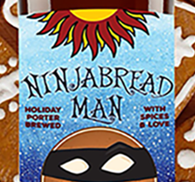
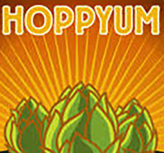
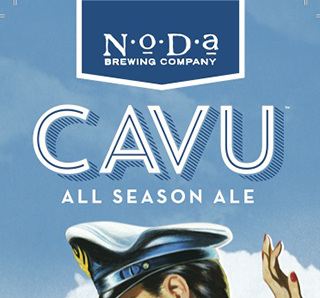
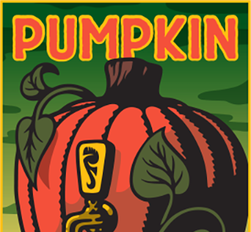

Hello fellow beer drinkers of the old North State! If you're anything like me, you love trying new craft beers, and even moreso when they're made close to home. This site will feature seasonal craft beers from all corners of North Carolina, while hightlighting brews developed for the upcoming summer! Additionally, I'll share both mine and my father's top 10 craft beers(some hailing from outside of NC), to give you a sense of our tastes. Hopefully this site will shed some light on the artistry of local craft beers. Enjoy!
-Coleman Hayes
Winter
Ninjabread Porter
Asheville, NC
Spring
Hoppyum IPA
Winston-Salem, NC
Summer
Cavu All Season
Charlotte, NC
Autumn
Foothills Pumpkin
Winston-Salem, NC